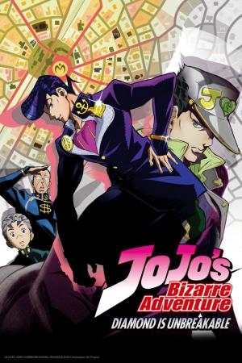

Jojos Bizarre Adventure: Diamond Is Unbreakable |
||
|---|---|---|
|  | Sinopsis: En 1999, en la ciudad ficticia de Morioh, Josuke Higashikata, hijo ilegítimo de Joseph, es preguntado por Jotaro para resolver un caso de un asesino en serie que ronda por la ciudad, que resulta ser un usuario de Stand creado a partir de una flecha utilizada por dos hermanos que están creando usuarios de Stand para sacar a su padre, maldecido por DIO, de su miseria. Josuke y sus amigos Koichi Hirose, Okuyasu Nijimura y el famoso mangaka Rohan Kishibe, así como Jotaro y Joseph, luchan juntos para detener al asesino en serie Yoshikage Kira. |
Director:Naokatsu Tsuda, Yûgo Kanno, Toshiyuki Kato Reparto:Daisuki Ono,Takahiro Sakurai, Yuki Daisuki Año: 2016 Duracion:25 min por capitulo Pais:Japon |
Criticas Profesionales:OzelitaxEl manga ya es magistral pero esta adaptación lo lleva directamente a los cielos. Genial, aunque bizarra y no apta para todos. |
Trailer |
Obtener:AlquilarComprar |
Registrate/Iniciar Sesion